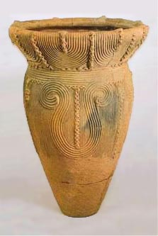

| Early Japanese Pottery
Of
all the kinds of artifacts which may be found at archaeological
sites, ceramics are surely one of the most important. Ceramic artifacts
are extremely durable, and may last tens of thousands of years virtually
unchanged from the date of manufacture. And ceramic artifacts, unlike
stone tools, are completely person-made, shaped of clay and purposely
fired. Clay figurines are known from the earliest human occupations,
but clay vessels, pottery vessels used for storing, cooking and
serving food, and carrying water were first manufactured at least
12-13,000 years ago, and perhaps a little earlier yet.
Shards from the earliest pottery vessels known in the world have
been found at the Kamino site in southwestern Japan. This site has
a stone tool assemblage which appears to classify it as late Paleolithic,
called Pre-ceramic
in Japanese archaeology to separate it from the Lower Paleolithic
cultures of Europe and the mainland. At the Kamino site in addition
to a handful of potshards were found microblades, wedge-shaped microcores,
spearheads and other artifacts similar to assemblages at Pre-ceramic
sites in Japan dated between 14,000 and 16,000 years before the
present (BP); furthermore this layer is stratigraphically below
a securely dated Initial Jomon occupation of 12,000 BP. The ceramic
shards are not decorated, and are very small and fragmentary.
Ceramic shards are also found, also in small quantities, but with
a bean-impression decoration, in a half-dozen sites of the Mikoshiba-Chojukado
sites of southwestern Japan, also dated to the late Pre-ceramic
period. These pots are bag shaped but somewhat pointed at the bottom,
and sites with these shards include the Odaiyamamoto
and Ushirono sites, and Senpukuji Cave. Like those of the
Kamino site, these shards are also quite rare, suggesting that although
the technology was known to the Late Pre-ceramic cultures, it just
was not terribly useful to their nomadic lifestyle.
In contrast, ceramics were very useful indeed to the Jomon peoples.
In Japanese, the word "Jomon" means "cord-mark,"
as in cord-marked decoration on pottery. The Jomon
tradition is the name given to hunter-gatherer cultures
in Japan from about 13,000 to 2500 BP, when migrating populations
from the mainland brought fulltime wet rice agriculture. For the
entire ten millennia, the Jomon peoples used ceramic vessels for
storage and cooking. Incipient Jomon ceramics are identified by
patterns of lines applied onto a bag-shaped vessel. Later, as on
the mainland, highly decorated vessels
were also manufactured by the Jomon peoples.
By 10,000 BP, the use of ceramics may be found throughout mainland
China, and by 5,000 BP ceramic vessels can be found throughout the
world, both independently invented in the Americas or spread by
diffusion into the middle eastern Neolithic cultures.
This article was written by K.
Kris Hirst, based on Keiji Imamura's Prehistoric
Japan: New Perspectives on Insular East Asia, and with
the assistance of Charles Keally's summary of Japanese
archaeology.
More Articles
More Pots of the Week
|